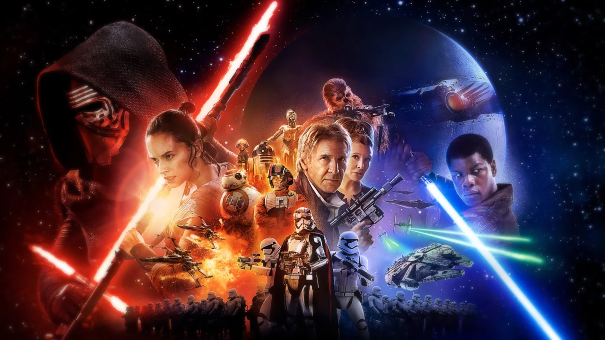
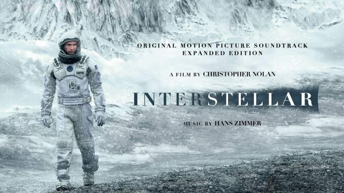
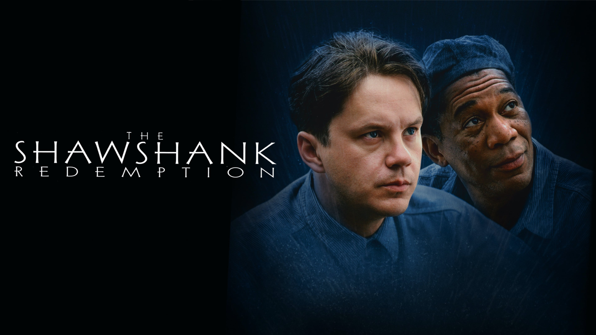

Рекомендації фільмів за різними категоріями
Віддайте світ кіно свою увагу, оскільки ми пропонуємо вам незабутню подорож через найкращі фільми в різних категоріях. Вирушайте з нами в унікальну подорож, де ви зустрінете найвідоміших режисерів, найемоційніші драми, культові стрічки та фільми, що стали найкращими за рік.
Кожен рік кінематографія насичується неймовірними шедеврами, які запам'ятовуються нам на все життя. У нашій статті ви знайдете списки найкращих фільмів року, що порадували глядачів своєю унікальністю та глибиною емоцій. Крім того, ви ознайомитесь з культовими стрічками, які стали справжніми символами світового кіно та надихнули ціле покоління кіноманів.
Окрім того, наші списки присвячені найкращим режисерським роботам, які здивували світ своєю майстерністю та вмінням створювати неперевершені шедеври. Ви дізнаєтеся про талановитих режисерів, які залишають свій незабутній слід у кінопросторі та здатні перенести глядача у світ мрій і фантазій.
Завдяки нашим спискам фільмів, ви матимете можливість погрузитися у різні жанри та знайти фільми, що точно підкорять ваші серця. Ви знайдете найемоційніші драми, захоплюючі пригоди, дивовижні науково-фантастичні фільми та багато іншого.
Приєднуйтеся до нашої подорожі крізь кращі фільми кожного жанру та року, дозвольте собі погрузитися у світ неперевершеного кінематографу. Наші списки стануть вашим надійним провідником у цьому безмежному світі. Залишайтесь з нами та отримайте незабутні враження від перегляду найкращих фільмів нашого часу.

Найкращі фільми року
- "Паразити" (2019) - реж. Бон Чжун Хо
- "1917" (2019) - реж. Сем Мендес
- "Іришмен" (2019) - реж. Мартін Скорсезе
- "Одного разу... в Голлівуді" (2019) - реж. Квентін Тарантіно
- "Дівчина, яка залишила своїм" (2020) - реж. Грета Гервіґ

Культові стрічки
- "Зоряні війни" (сага) - реж. Джордж Лукас
- "Кримінальне чтиво" (1994) - реж. Квентін Тарантіно
- "Шоу Трумана" (1998) - реж. Пітер Вір
- "Зелена миля" (1999) - реж. Френк Дарабонт
- "Бойовий клуб" (1999) - реж. Девід Фінчер

Найкращі режисерські роботи
- Стенлі Кубрік - "2001 рік: Космічна одіссея" (1968), "Сяйво" (1980), "Годинниковий помилковий механізм" (1971)
- Крістофер Нолан - "Початок" (2010), "Темний лицар" (2008), "Інтерстеллар" (2014)
- Квентін Тарантіно - "Бешкетникам" (1992), "Убити Білла" (2003), "Бульвар мрій" (2019)
- Стівен Спілберг - "Список Шиндлера" (1993), "Загублені у космосі" (1998), "Велетенська акула" (1975)
- Альфред Хічкок - "Норт-вест" (1959), "Сім психопатів" (1960), "Психо" (1960)

Найемоційніші драми
- "Форрест Гамп" (1994) - реж. Роберт Земекіс
- "Список Шиндлера" (1993) - реж. Стівен Спілберг
- "Життя прекрасне" (1997) - реж. Роберто Беніньї
- "Помутніння" (2010) - реж. Дерек Сіанфранс
- "Втеча з Шоушенка" (1994) - реж. Френк Дарабонт
Ось кілька інших фільмів, які варто переглянути. "Шоу Трумана" - це захоплююча драма, що розповідає про чоловіка, якого життям керує телевізійна камера. "Інтерстеллар" - науково-фантастичний епічний шедевр, який бере нас у захоплюючу подорож через простір і час у пошуках нового дому для людства. "Великий Гетсбі" - це екранізація класичного роману Френсіса Скотта Фітцджеральда, яка розповідає про життя багатих і знаменитих в 1920-х роках. "Імітація гри" - це трилер, що змушує задуматись про реальність і віртуальний світ, де межі між ними постійно розмиваються. "Диявол носить Prada" - це комедійний фільм про життя молодої журналістки, яка отримує роботу в журналі моди і зіштовхується зі своєрідною главред. Всі ці фільми пропонують унікальний світ та захоплюючі історії, які залишать вас задоволеними та захопленими. Це лише кілька прикладів фільмів, які варто переглянути. Світ кіно надає безліч неповторних творінь, і кожен може знайти щось відповідне до свого смаку. Відправляйтесь у кіноподорожі та насолоджуйтесь цим магічним світом, який кіно нам пропонує!